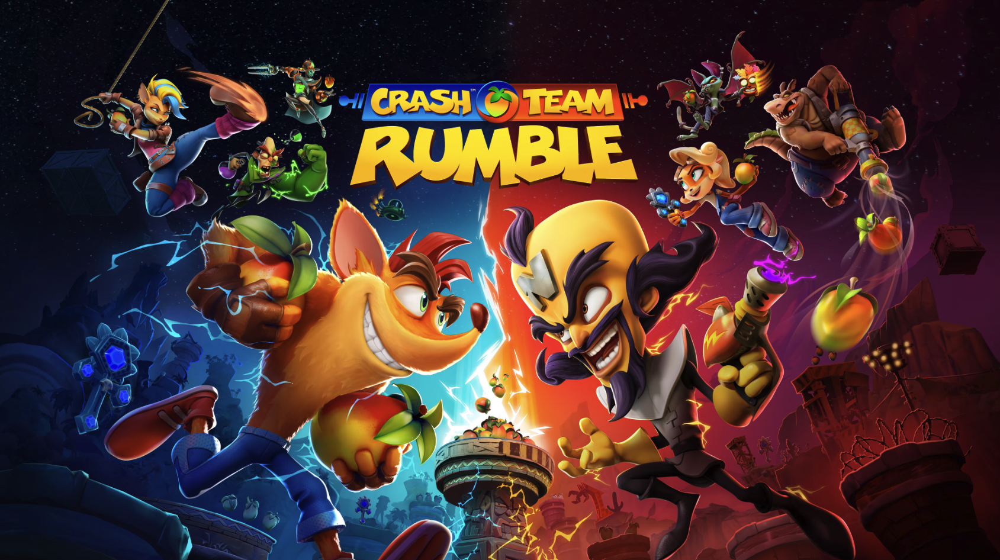
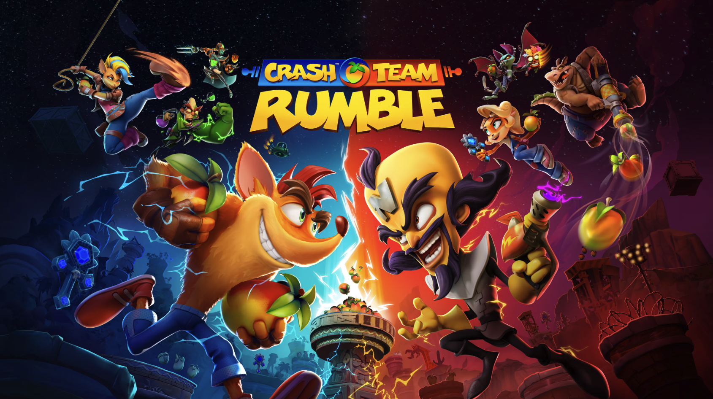

Me as a game user researcher...
I am enthusiastic about video games, especially RPGs (e.g., Assassin's Creed series, A Plague Tale series, Black Myth: Wukong), FPS games (e.g., Call of Duty), and mobile MOBAs (Wild Rift). I am also a game photographer who travels around and takes photos in games. I would love to apply my research skills in this field and contribute to creating a great gameplay experience.
I am interested in the following aspects of gaming experience:
- Mixed methods and quantitative approaches such as survey data, telemetry analysis, and statistical modeling to capture patterns in player behavior and cognition
- Applications of biometric tools (e.g., eye tracking and GSR) to study player attention, emotional engagement, and moment-to-moment gameplay experience
- Social interaction and identity expression in multiplayer and virtual environments
Game User Research Experiences
User Researcher | Activision
July 2024 - Present
- Games worked on: Call of Duty: Black Ops 6
User Research Intern | Activision
May 2023 - Aug 2023
- Games worked on: Call of Duty: Modern Warfare III and Call of Duty: Warzone Mobile
- Coordinated in-lab playtests, independently executed station setup, tech issue resolution, participant intake and outtake, and participant communication
- Performed in-depth qualitative and quantitative analyses of player's survey responses, ratings, and telemetry data
- Independently drafted multiple sections of detailed reports, enhanced report effectiveness through data visualization, imagery, and video visual aids
- Led a groundbreaking project on Call of Duty players' use of mini-map with eye-tracking data, in order to quantitatively model player expertise
User Research Intern | Activision
May 2022 - Aug 2022
- Games worked on: Call of Duty: Modern Warfare II, Call of Duty: Warzone Mobile, and Crash Team Rumble
- Independently moderated 1-on-1 usability sessions with participants on PC, console, and mobile platforms
- Assisted with in-lab playtests, encompassing tasks such as managing participant intake/outtake, station supervision, and addressing troubleshooting needs
- Performed qualitative and quantitative analyses on player responses and behaviors, and assisted with writing reports in a variety of length and detail formats
- Conducted an individual project on analyzing in-game navigation experience using the eye-tracking technique, resulting in substantial contributions to design improvements within the game
 
